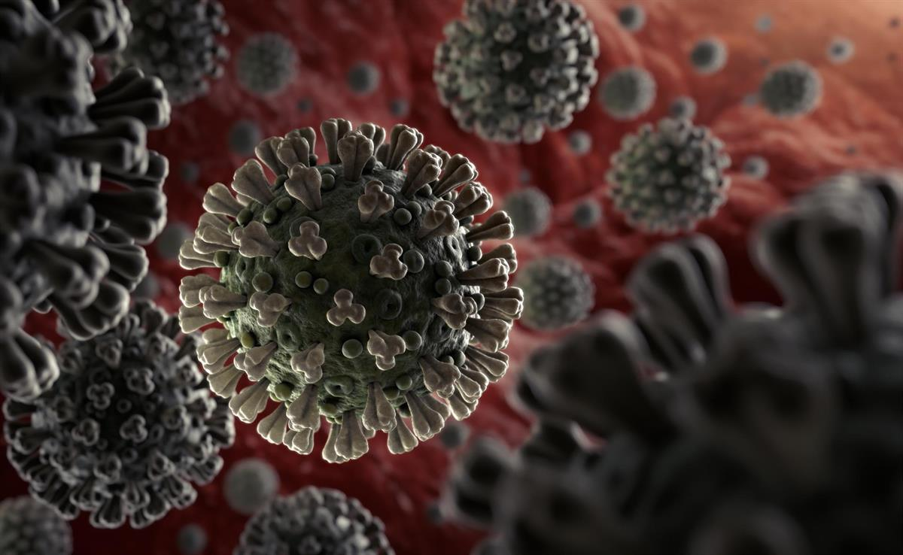

The Science Behind it
According to a staff member at Mayo Clinic, “Infection with the new coronavirus (severe acute respiratory syndrome coronavirus 2, or SARS-CoV-2) causes coronavirus disease 2019 (COVID-19) …” (Mayo Clinic Staff, 2020). Scientists continue to research about how this coronavirus spreads, but we do know that this virus spreads quickly and easily. A person can get infected through respiratory droplets, airborne transmission, or through touch-to-touch contact. COVID-19 is a respiratory illness. Which means that it is spread through respiratory droplets released when a person coughs, sneezes, speaks, etc. Another way that COVID-19 is spread is through airborne transmission. Some respiratory droplets can remain airborne for minutes on end. When coronavirus is spread through these airborne droplets, it is called airborne transmission. There is not much research on how common this type of transmission is, so the best way to prevent the spread of the virus through airborne transmission is to wear a mask when going out in public. The least common way that COVID-19 is spread is through touch-touch contact. If a person touches an object and then touches their eyes, nose, or mouth, they can catch COVID-19. This happens when an infected person touches an object because their germs transfer from their body to the object. The best way to avoid germ transfer is to refrain from touching items in a popular or public place.
When a person gets infected with COVID-19, their body goes through a long process. COVID starts in the respiratory tract. This disease starts in the same place as the common cold. This means that it can have similar symptoms. For example, cough, sore or scratchy throat, and stuffy or runny nose. The difference between the cold and COVID-19 can be very subtle. COVID-19 is more likely to get deeper into the respiratory tract than a cold. After the virus is in the respiratory tract, the body notices that something is wrong. This is when the immune system starts attacking the virus. Now a fever is added to the list of symptoms. This coronavirus attacks your body by entering healthy cells. The virus makes copies of itself until it has invaded the entire body. This is where the bodies immune system comes into play. The immune system makes antibodies to fight off the invading virus. An antibody is a protective chemical that fights off viruses like the flu virus and coronavirus. To prevent yourself from getting COVID-19, you need to wear a mask. The CDC has shown that wearing two masks is 60% more affective. By simply wearing a mask, you can help keep the people around you safe.
One of the biggest questions that people world-wide are asking is “Can a person get infected more than once?”. According to a doctor at Mayo Clinic, “Some reinfections of the virus that causes COVID-19 have happened, but these have been uncommon…” (Mayo Clinic Staff, 2020). Not many cases of reinfection have been reported, but it is possible. The CDC currently has an ongoing investigation studying everything about reinfections, but there is not much known information at this time.